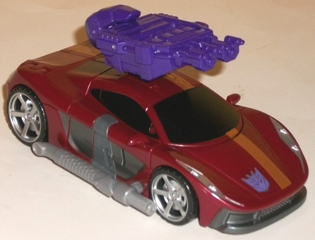
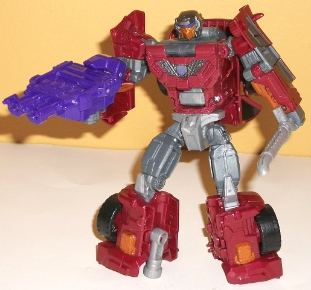
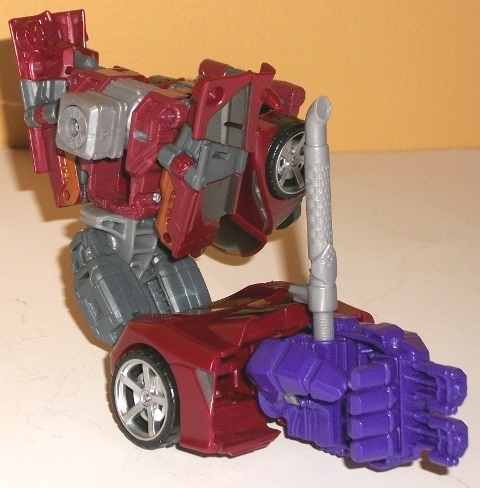
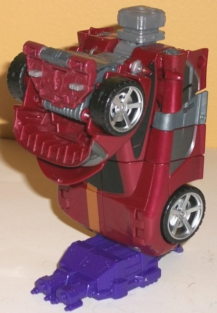

Allegiance
: Decepticon
Size
: Deluxe
Difficulty of Transformation to Robot:
Easy
Difficulty of Transformation to Leg
:
Very Easy
Difficulty of Transformation to Arm
:
Easy
Color Scheme
: Milky dull rusty red,
milky gunmetal gray, black, and some light milky gray, royal purple, dull
metallic bronze, dark metallic gunmetal gray, silver, and pale dark purple
Rating
: 9.4


Dead End's alt mode
is a rather curvy sportscar of indeterminate make. I really like just how
much the "curvy" emphasis is on this mode-- there's literally no hard edges,
so it makes Dead End look very aerodynamic and sleek. The flipside of this
is that Dead End has very mold detailing in this mode-- pretty much only
what's necessary, beyond a few extra details on the wheels, grill, and
headlights-- but if he did have a bunch of mold detailing, it would sort
of ruin the look in this mode, so I don't mind it. Proportionally Dead
End's just about perfect here, and there's no robot extras whatsoever--
not even a hint of them on the back end, which is quite impressive. Another
big plus is his color scheme-- the milky rusty red is a really nice shade,
looking rather like an actual car finish despite this red not being paint.
The black windows (hurray! even the rear window is painted!) and the tires
help to give a bit of black to the mode, and the gunmetal paint and plastic
on the sides and grill is also a really attractive shade and adds another
neutral color to the scheme. The silver on the headlights and wheels also
adds a bit of "light" coloration to this mode, though Dead End's signature
asymmetrical metallic bronze stripe is what really makes this mode stand
out in a more unique sense on a shelf, and the bronze complements the rusty
red perfectly. On the negative side, there's just a touch of that ugly
light milky gray-- mostly on the back end (the taillights are, sadly, the
only major detail not painted) and on the side exhaust pipe. Again, an
ugly color, but not used much. Dead End has two accessories-- a "club"
made from his detachable side exhaust pipe (which admittedly he looks a
little dumb holding in robot mode), and the hand/foot/gun weapon that all
Combiner Wars deluxes come with. (Dead End's HFG weapon is a nice royal
purple, just like the rest of the Stunticons', and makes for a nice tertiary
color for Dead End as well. On the front are what
look
like triple-barreled
energy blasters, though I'm not
completely
sure exactly what type
of weapon they're supposed to be.) The HFG, unfortunately, can only be
placed in a port right on the top of this mode, making it stick out a fair
amount, compared to several other CW deluxes where this accessory "melds"
with the vehicle mode a bit in some way.
Dead End's transformation
is pretty simple, mostly just involving the folding out of the arms and
legs while the front section of the car mode is secured behind his back.
The legs do add a nice extra little twist with the entire lower legs opening
up for folding out and a waist twist, compared to simply tugging them out
to make them longer. In robot mode Dead End also looks quite nice-- his
only major piece of vehicle kibble is the car front and hood on his back,
but this all stays out of the way and only gets in the way of shoulder
articulation to a very minor extent, so I don't really mind it much. Dead
End's arms are fairly thick and a tad short if they aren't folded at the
elbows, but that's about his only issue proportionally. The head, chest,
and legs look very nice and have a fair amount of robotic and circuitry
detailing to help give Dead End some mold details that I already mentioned
his vehicle mode was lacking. Having the chest panel over the combiner
peg so it's not so obvious in robot mode is a nice touch, and Dead End's
headsculpt calls back to his G1 self while modernizing it a bit, with a
more detailed bronze faceplate and "helmet". The little ridges along the
bottom of his purple visor are also a wicked-looking extra touch. I do
lament Dead End's lack of real identifiable feet, though-- his legs just
sort of "end". He's still quite stable, but it does look a bit odd. His
color scheme is broken up by more gunmetal and light gray in this mode
when compared to the rusty red so he doesn't look QUITE as good in this
mode color-wise, but there's still a fair number of paint apps to help
keep things nice and varied in this mode, with the bronze paint apps on
his lower legs and arms particularly appreciated. For articulation, Dead
End can move at the neck, shoulders (at two points), elbows (at two points),
inwards at the wrists, rotation at the waist, and movement at the hips
(at two points) and knees-- given that he's well-balanced, this means he's
also quite poseable.


Dead End's arm mode
is-- like most Combiner Wars deluxes-- a bit of a variation on his robot
mode. The head has been folded away with the front third of the car chunk
behind his back, the combiner peg in his chest rotated outwards, and his
arms raised a bit and tucked into his sides, with a small tab holding the
arms to his main body. His legs peg together, with the tailpipe-- in rather
ingenious little maneuver-- flipping around to become the port where you
insert his hand/foot/weapon in its hand configuration. I do like how the
car bits compress behind his back, but the robot arms are quite obvious
on the sides of the combined form's shoulder-- not to mention that one
shallow little tab isn't enough to keep them firmly in place, even if his
regular robot shoulder joints are strong enough to hold them in place anyways.
(That said, with the arms a bit thick and fitting in with the general silouhette,
they don't stick out as much as if they were skinner.) The legs connecting
together to form the lower portion of the arm is pretty typical, and looks
decent enough, if a bit wide at the bottom. The issue here-- and my main
issue with Dead End's arm mode-- is that aside from the tailpipe-peg, the
front of the arm is hollow, which doesn't look good even with the hand
connecting and covering up some of this hollow space. For articulation,
Dead End has the usual range of movement for a CW deluxe in arm mode--
he can move at the shoulder (at two points), elbow (at two or three points,
depending on whether the robot knees are facing forward or not), wrist,
thumb (at two points), and at the base of his four fingers (all moving
as one joint).
There's not much to
Dead End's leg mode at all-- it's literally just his car mode on its back
end with the front third flipped back and the combiner peg rotated up.
On the one hand, this makes for a simple and quick transformation, everything's
locked well into place, and it makes for a very solid-looking leg; on the
other hand, there isn't anything to partially "cover up" the combiner peg
from the front, i.e. no kneecap, which can look a little bad on some torso
bots (including, unfortunately, Menasor). Dead End has the same articulation
as the other CW deluxes in leg mode-- the foot can rotate, and the knee
joint can move at two points.
Combiner Wars Dead End
is one of my favorite molds out of all the deluxes under this banner of
the Generations line. Both his car and robot modes are very solid, well-proportioned,
and well-done, and although his appendage modes do have some minor issues,
they're generally not that big of a deal, especially when compared with
certain other CW deluxes' limb modes. He's also got a great base plastic
color and color scheme-- highly recommended, even if you don't plan on
getting the rest of the Stunticons.
Decepticon Operational Status Update,
reported by Soundwave:
Most Decepticons think they are close
to ending their war with the Autobots, but Dead End believes the end is
closer still. When motivated to speak, Dead End will explain that the universe
is doomed, and the finale is imminent. With such a fatalistic view, it's
odd that Dead End spends so much of his time polishing his armor and washing
his vehicle mode. What seems ridiculous to some makes perfect sense from
his point of view: he just wants to look his best when Armageddon finally
strikes. His radar scanner covers hundreds of miles, and he's been clocked
at 220 miles per hour in vehicle mode. His battle club is a fearsome weapon
in close combat, capable of unleashing a concentrated blast of compressed
air without warning. With fellow Stunticons forms Menasor.
CONCLUSION: Combat approved and endorsed.
HISTORY (extracted from compulsory
biographical download):
The Stunticons were created by Megatron
as the Decepticon response to Autobot dominance of the streets and highways
of Earth. It was on Earth that Dead End found his only "happy place"--
sitting alone in a darkened car wash. That depressing outlook makes him
a tedious teammate, but his participation is vital to the Stunticon team.
Forms either an arm or leg of Menasor, the combined form of the Stunticons.
Review by Beastbot